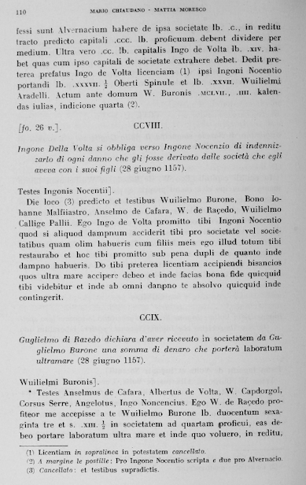
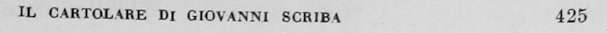
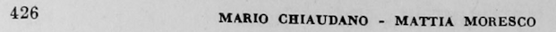
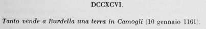
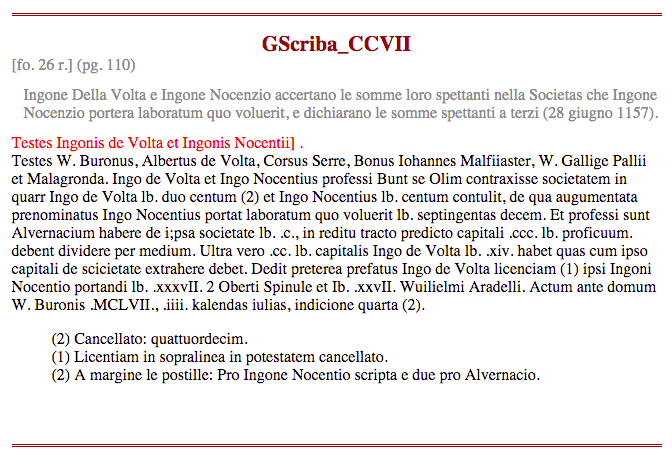

November 25, 2014
Generating an Ordered Data Set from an OCR Text File
- Reviewed by
Fred Gibbs
and Brandon Hawk
Recommended for Advanced Users
Generating an Ordered Data Set from a Text File
Lesson goals:
This tutorial illustrates strategies for taking raw OCR output from a scanned text, parsing it to isolate and correct essential elements of metadata, and generating an ordered data set (a python dictionary) from it. These illustrations are specific to a particular text, but the overall strategy, and some of the individual procedures, can be adapted to organize any scanned text, even if it doesn’t look like this one.
Table of Contents
Introduction
It is often the case that historians involved in digital projects wish to work with digitized texts, so they think “OK, I’ll just scan this fabulously rich and useful collection of original source material and do wonderful things with the digital text that results”. (Those of us who have done this, now smile ruefully). Such historians quickly discover that even the best OCR results in unacceptably high error rates. So the historian now thinks “OK I’ll get some grant money, and I’ll enlist the help of an army of RAs/Grad students/Undergrads/Barely literate street urchins, to correct errors in my OCR output. (We smile again, even more sadly now).
-
There is little funding for this kind of thing. Increasingly, projects in the humanities have focused upon NLP/Data Mining/Machine Learning/Graph Analysis, and the like, frequently overlooking the fundamental problem of generating useable digital texts. The presumption has often been, well, Google scanned all that stuff didn’t they? What’s the matter with their scans?
-
Even if you had such an army of helpers, proof-reading the OCR output of, say, a collection of twelfth century Italian charters transcribed and published in 1935, will quickly drive them all mad, make their eyes bleed, and the result will still be a great wad of text containing a great many errors, and you will still have to do something to it before it becomes useful in any context.
Going through a text file line by line and correcting OCR errors one at a time is hugely error-prone, as any proof reader will tell you. There are ways to automate some of this tedious work. A scripting language like Perl or Python can allow you to search your OCR output text for common errors and correct them using “Regular Expressions”, a language for describing patterns in text. (So called because they express a “regular language”. See L.T. O’Hara’s tutorial on Regular Expressions here at the PM.) Regular Expressions, however, are only useful if the expressions you are searching for are … well … regular. Unfortunately, much of what you have in OCR output is highly irregular. If you could impose some order on it: create an ordered data set out of it, your Regular Expression tools would become much more powerful.
Consider, for example, what happens if your OCR interpreted a lot of strings like this “21 July, 1921” as “2l July, 192l”, turning the integer ‘1’ into an ‘l’. You would love to be able to write a search and replace script that would turn all instances of 2l into 21, but then what would happen if you had lots of occurrences of strings like this in your text: “2lb. hammer”. You’d get a bunch of 21b. hammers; not what you want. If only you could tell your script: only change 2l into 21 in sections where there are dates, not weights. If you had an ordered data set, you could do things like that.
Very often the texts that historians wish to digitize are, in fact, ordered data sets: ordered collections of primary source documents, or a legal code say, or a cartulary. But the editorial structure imposed upon such resources is usually designed for a particular kind of data retrieval technology i.e., a codex, a book. For a digitized text you need a different kind of structure. If you can get rid of the book related infrastructure and reorganize the text according to the sections and divisions that you’re interested in, you will wind up with data that is much easier to do search and replace operations on, and as a bonus, your text will become immediately useful in a variety of other contexts as well.
This is where a scripting language like Python comes very much in handy. For our project we wanted to prepare some of the documents from a 12th century collection of imbreviatura from the Italian scribe known as Giovanni Scriba so that they could be marked up by historians for subsequent NLP analysis or potentially for other purposes as well. The pages of the 1935 published edition look like this.

The OCR output from such scans look like this even after some substantial clean-up (I’ve wrapped the longest lines so that they fit here):
110 MARIO CHIAUDANO MATTIA MORESCO
professi sunt Alvernacium habere de i;psa societate lb. .c., in reditu
tracto predicto capitali .ccc. lb. proficuum. debent dividere per medium. Ultra
vero .cc. lb. capitalis Ingo de Volta lb. .xiv. habet quas cum ipso capitali de
scicietate extrahere debet. Dedit preterea prefatus Ingo de Volta licenciam (1)
ipsi Ingoni Nocentio portandi lb. .xxxvII. 2 Oberti Spinule et Ib. .xxvII.
Wuilielmi Aradelli. Actum ante domum W. Buronis .MCLVII., .iiii. kalendas
iulias, indicione quarta (2).
L f o. 26 v.] . CCVIII.
Ingone Della Volta si obbliga verso Ingone Nocenzio di indennizzarlo di ogni
danno che gli fosse derivato dalle societa che egli aveva con i suoi figli (28
giugno 1157).
Testes Ingonis Nocentii] .
Die loco (3) ,predicto et testibus Wuilielmo Burone, Bono Iohanne
Malfiiastro, Anselmo de Cafara, W. de Racedo, Wuilielmo Callige Pallii. Ego Ingo
de Volta promitto tibi Ingoni Nocentio quod si aliquod dampnum acciderit tibi
pro societate vel societatibus quam olim habueris cum filiis meis ego illud
totum tibi restaurato et hoc tibi promitto sub pena dupli de quanto inde dampno
habueris. Do tibi preterea licentiam accipiendi bisancios quos ultra mare
acciipere debeo et inde facias tona fide quicquid tibi videbitur et inde ab omni
danpno te absolvo quicquid inde contingerit.
CCIX.
Guglielmo di Razedo dichiara d'aver ricevuto in societatem da Guglielmo
Barone una somma di denaro che portera laboratum ultramare (28 giugno 1157).
Wuilielmi Buronis] .
Testes Anselmus de Cafara, Albertus de Volta, W. Capdorgol, Corsus
Serre, Angelotus, Ingo Noncencius. Ego W. de Raeedo profiteor me accepisse a te
Wuilielmo Burone lb. duocentum sexaginta tre et s. .XIII. 1/2 in societatem ad
quartam proficui, eas debeo portare laboratum ultra mare et inde quo voluero, in
reditu,
(11 Licentiam in sopralinea in potestatem cancellato.
(2) A margine le postille: Pro Ingone Nocentio scripta e due pro Alvernacio.
(3) Cancellato: et testibus supradictis.
In the scan of the original, the reader’s eye readily parses the page: the layout has meaning. But as you can see, reduced to plain text like this, none of the metadata implied by the page layout and typography can be differentiated by automated processes.
You can see from the scan that each charter has the following metadata associated with it.
- Charter number
- Page number
- Folio number
- An Italian summary, ending in a date of some kind
- A line, usually ending with a ‘]’ that marks a marginal notation in the original
- Frequently a collection of in-text numbered footnote markers, whose text appears at the bottom of each page, sequentially numbered, and restarting from 1 on each new page.
- The Latin text of the charter itself
This is typical of such resources, though editorial conventions will vary widely. The point is: this is an ordered data set, not just a great big string of characters. With some fairly straightforward Python scripts, we can turn our OCR output into an ordered data set, in this case, a python dictionary, before we start trying to proofread the Latin charter texts. With such an ordered data set in hand, we can do proofreading, and potentially many other kinds of tasks, much more effectively.
So, the aim of this tutorial is to take a plain text file, like the OCR output above and turn it into a python dictionary with fields for the Latin text of the charter and for each of the metadata elements mentioned above:
{
.
.
.
52: {'chid': 'GScriba_LII',
'chno': 52,
'date': datetime.date(1156, 3, 27),
'folio': '[fo. 6 r.]',
'footnotes': [(1, 'Cancellato: m.')],
'marginal': 'no marginal]',
'pgno': 29,
'summary': 'I consoli di Genova riconoscono con sentenza il diritto di Romano di Casella di pagarsi sui beni di Gerardo Confector per un credito che aveva verso il medesimo (27 marzo 1156).',
'text': [' In pontili capituli consules E. Aurie, W. Buronus, Ogerius Ventus laudaverunt quod Romanus de Casella haberet in bonis Gerardi Confectoris s. .xxvi. denariorum et possit eos accipere sine contradicione eius et omnium pro eo. Hoc ideo quia, cum; Romanus ante ipsos inde conquereretur, ipso Gerardo debitum non negante, sed quod de usura esset obiiciendo, iuravit nominatus Romanus quod capitalis erat (1) et non de usura, unde ut supra laudaverunt , .MCLVI., sexto kalendas aprilis, indicione tercia.\n']},
53: {'chid': 'GScriba_LIII',
'chno': 53,
'date': datetime.date(1156, 3, 27),
'folio': '[fo. 6 r.]',
'footnotes': [],
'marginal': 'Belmusti]',
'pgno': 29,
'summary': "Maestro Arnaldo e Giordan nipote del fu Giovanni di Piacenza si obbligano di pagare una somma nell'ottava della prossima Pasqua, per merce ricevuta (27 marzo 1156).",
'text': [' Testes Conradus Porcellus, Albericus, Vassallus Gambalixa, Petrus Artodi. Nos Arnaldus magister et Iordan nepos quondam Iohannis Placentie accepimus a te Belmusto tantum bracile unde promittimus dare tibi vel tuo certo misso lb. .xLIII. denariorum usque octavam proximi pasce, quod si non fecerimus penam dupli tibi stipulanti promittimus, bona pignori, possis unumquemque convenire de toto. Actum prope campanile Sancti Laurentii, millesimo centesimo .Lv., sexto kalendas aprilis, indictione tercia.\n']},
.
.
. etc.
}
Remember, this is just a text representation of a data structure that lives in computer memory. Python calls this sort of structure a ‘dictionary’, other programming languages may call it a ‘hash’, or an ‘associative array’. The point is that it is infinitely easier to do any sort of programmatic analysis or manipulation of a digital text if it is in such a form, rather than in the form of a plain text file. The advantage is that such a data structure can be queried, or calculations can be performed on the data, without first having to parse the text.
A couple of useful functions before we start:
We’re going to borrow a couple of functions written by others. They both represent some pretty sophisticated programming. Understanding what’s going on in these functions is instructive, but not necessary. Reading and using other people’s code is how you learn programming, and is the soul of the Open-Source movement. Even if you don’t fully understand how somebody does it, you can nevertheless test functions like this to see that they reliably do what they say they can, and then just apply it to your immediate problem if they are relevant.
Levenshtein distance
You will note that some of the metadata listed above is page-bound and some of it is charter-bound. Getting these untangled from each other is our aim. There is a class of page-bound data that is useless for our purposes, and only meaningful in the context of a physical book: page headers and footers. In our text, these look like this on recto leaves (in a codex, a book, recto is the right-side page, and verso its reverse, the left-side page)

and this on verso leaves:

We’d like to preserve the page number information for each charter on the page, but the header text isn’t useful to us and will just make any search and replace operation more difficult. So we’d like to find header text and replace it with a string that’s easy to find with a Regular Expression, and store the page number.
Unfortunately, regular expressions won’t help you much here. This text can appear on any line of our OCR output text, and the ways in which OCR software can foul it up are effectively limitless. Here are some examples of page headers, both recto and verso in our raw OCR output.
260 11141110 CH[AUDANO MATTIA MORESCO
IL CIRTOL4RE DI CIOVINN1 St'Itlltl 269
IL CJIRTOL.%RE DI G:OVeNNl FIM P% 297
IL CIP.TQLIRE DI G'OVeNNI SCI Dt r.23
332 T1uu:0 CHIAUDANO M:11TIA MGRESCO
IL CIRTOL.'RE DI G:OV.I\N( sca:FR 339
342 NI .\ßlO CHIAUDANO 9LtTTIA MORESCO
These strings are not regular enough to reliably find with regular expressions; however, if you know what the strings are supposed to look like, you can compose some kind of string similarity algorithm to test each string against an exemplar and measure the likelihood that it is a page header. Fortunately, I didn’t have to compose such an algorithm, Vladimir Levenshtein did it for us in 1965 (see: http://en.wikipedia.org/wiki/Levenshtein_distance). A computer language can encode this algorithm in any number of ways; here’s an effective Python function that will work for us:
def lev(seq1, seq2):
""" Return Levenshtein distance metric
(ripped from http://pydoc.net/Python/Whoosh/2.3.2/whoosh.support.levenshtein/)
"""
oneago = None
thisrow = range(1, len(seq2) + 1) + [0]
for x in xrange(len(seq1)):
twoago, oneago, thisrow = oneago, thisrow, [0] * len(seq2) + [x + 1]
for y in xrange(len(seq2)):
delcost = oneago[y] + 1
addcost = thisrow[y - 1] + 1
subcost = oneago[y - 1] + (seq1[x] != seq2[y])
thisrow[y] = min(delcost, addcost, subcost)
# This block deals with transpositions
if (x > 0 and y > 0 and seq1[x] == seq2[y - 1]
and seq1[x-1] == seq2[y] and seq1[x] != seq2[y]):
thisrow[y] = min(thisrow[y], twoago[y - 2] + 1)
return thisrow[len(seq2) - 1]
Again, this is some pretty sophisticated programming, but for our purposes all we need to know is that the lev() function takes two strings as parameters and returns a number that indicates the ‘string distance’ between them, or, how many changes had to be made to turn the first string into the second. So: lev("fizz", "buzz") returns ‘2’
Roman to Arabic numerals
You’ll also note that in the published edition, the charters are numbered with roman numerals. Converting roman numerals into arabic is an instructive puzzle to work out in Python. Here’s the cleanest and most elegant solution I know:
def rom2ar(rom):
""" From the Python tutor mailing list:
János Juhász janos.juhasz at VELUX.com
returns arabic equivalent of a Roman numeral """
roman_codec = {'M':1000, 'D':500, 'C':100, 'L':50, 'X':10, 'V':5, 'I':1}
roman = rom.upper()
roman = list(roman)
roman.reverse()
decimal = [roman_codec[ch] for ch in roman]
result = 0
while len(decimal):
act = decimal.pop()
if len(decimal) and act < max(decimal):
act = -act
result += act
return result
(run <this little script> to see in detail how rome2ar works. Elegant programming like this can offer insight; like poetry.)
Some other things we’ll need:
At the top of your Python module, you’re going to want to import some python modules that are a part of the standard library. (see Fred Gibbs’s tutorial Installing Python Modules with pip).
-
First among these is the “re” (regular expression) module
import re. Regular expressions are your friends. However, bear in mind Jamie Zawinski’s quip:Some people, when confronted with a problem, think “I know, I’ll use regular expressions.” Now they have two problems.
(Again, have a look at L.T. O’Hara’s introduction here at the Programming Historian Cleaning OCR’d text with Regular Expressions)
-
Also:
from pprint import pprint.pprintis just a pretty-printer for python objects like lists and dictionaries. You’ll want it because python dictionaries are much easier to read if they are formatted. -
And:
from collections import Counter. We’ll want this for the Find and normalize footnote markers and texts section below. This is not really necessary, but we’ll do some counting that would require a lot of lines of fiddly code and this will save us the trouble. The collections module has lots of deep magic in it and is well worth getting familiar with. (Again, see Doug Hellmann’s PyMOTW for the collections module. I should also point out that his book The Python Standard Library By Example is one well worth having.)
A very brief review of regular expressions as they are implemented in python
L.T. O’Hara’s introduction to using python flavored regular expressions is invaluable. In this context we should review a couple of basic facts about Python’s implementation of regular expressions, the re module, which is part of Python’s standard library.
re.compile()creates a regular expression object that has a number of methods. You should be familiar with.match(), and.search(), but also.findall()and.finditer()- Bear in mind the difference between
.match()and.search():.match()will only match at the beginning of a line, whereas.search()will match anywhere in the line but then it stops, it’ll only return the first match it finds. .match()and.search()return match objects. To retrieve the matched string you needmymatch.group(0). If your compiled regular expression has grouping parentheses in it (like our ‘slug’ regex below), you can retrieve those substrings of the matched string usingmymatch.group(1)etc..findall()and.finditer()will return all occurrences of the matched string;.findall()returns them as a list of strings, but .finditer() returns an iterator of match objects. (read the docs on the method .finditer().)
Iterative processing of text files
We’ll start with a single file of OCR output. We will iteratively generate new, corrected versions of this file by using it as input for our python scripts. Sometimes our script will make corrections automatically, more often, our scripts will simply alert us to where problems lie in the input file, and we will make corrections manually. So, for the first several operations we’re going to want to produce new and revised text files to use as input for our subsequent operations. Every time you produce a text file, you should version it and duplicate it so that you can always return to it. The next time you run your code (as you’re developing it) you might alter the file in an unhelpful way and it’s easiest just to restore the old version.
The code in this tutorial is highly edited; it is not comprehensive. As you continue to refine your input files, you will write lots of little ad hoc scripts to check on the efficacy of what you’ve done so far. Versioning will ensure that such experimentation will not destroy any progress that you’ve made.
## A note on how to deploy the code in this tutorial: The code in this tutorial is for Python 2.7.x, Python 3 is quite a different animal.
When you write code in a text file and then execute it, either at the command line, or from within your text editor or IDE, the Python interpreter executes the code line by line, from top to bottom. So, often the code on the bottom of the page will depend on code above it.
One way to use the code snippets in section 2 might be to have all of them in a single file and comment out the bits that you don’t want to run. Each time you execute the file, you will want to be sure that there is a logical control flow from the #! line at the top, through your various imports and assignment of global variables, and each loop, or block.
Or, each of the subsections in section 2 can also be treated as a separate script, each would then have to do its own importing and assignment of global variables.
In section 3, “Creating the Dictionary”, you will be operating on a data set in computer memory (the charters dictionary) that will be generated from the latest, most correct, input text you have. So you will want to maintain a single python module in which you define the dictionary at the top, along with your import statements and the assignment of global variables, followed by each of the four loops that will populate and then modify that dictionary.
#!/usr/bin/python
import re
from pprint import pprint
from collections import Counter
# followed by any global variables you will need, like:
n = 0
this_folio = '[fo. 1 r.]'
this_page = 1
# compiled regular expressions like:
slug = re.compile("(\[~~~~\sGScriba_)(.*)\s::::\s(\d+)\s~~~~\]")
fol = re.compile("\[fo\.\s?\d+\s?[rv]\.\s?\]")
pgbrk = re.compile("~~~~~ PAGE (\d+) ~~~~~")
# the canonical file you will be reading from
fin = open("/path/to/your/current/canonical.txt", 'r')
GScriba = fin.readlines()
# then the empty dictionary:
charters = dict()
# followed by the 4 'for' loops in section 2 that will populate and then modify this dictionary
First of all, we want to find all the page headers, both recto and verso and replace them with consistent strings that we can easily find with a regular expression. The following code looks for lines that are similar to what we know are our page headers to within a certain threshold. It will take some experimentation to find what this threshold is for your text. Since my recto and verso headers are roughly the same length, both have the same similarity score of 26.
NOTA BENE: The
lev()function described above returns a measure of the ‘distance’ between two strings, so, the shorter the page header string, the more likely it is that this trick will not work. If your page header is just “Header”, then any line comprised of a six letter word might give you a string distance of 6, eg:lev("Header", "Foobar")returns ‘6’, leaving you none the wiser. In our text, however, the header strings are long and complex enough to give you meaningful scores, eg:
lev("RANDOM STRING OF SIMILAR LENGTH: 38", 'IL CARTOLARE DI GIOVANNI SCRIBA')
returns 33, but one of our header strings, even badly mangled by the OCR, returns 20:
lev("IL CIRTOL4RE DI CIOVINN1 St'Itlltl 269", 'IL CARTOLARE DI GIOVANNI SCRIBA')
So we can use lev() to find and modify our header strings thus:
# At the top, do the importing you need and define the lev() function as described above, and then:
fin = open("our_base_OCR_result.txt", 'r') # read our OCR output text
fout = open("out1.txt", 'w') # create a new textfile to write to when we're ready
GScriba = fin.readlines() # turn our input file into a list of lines
for line in GScriba:
# get a Levenshtein distance score for each line in the text
recto_lev_score = lev(line, 'IL CARTOLARE DI GIOVANNI SCRIBA')
verso_lev_score = lev(line, 'MARIO CHIAUDANO - MATTIA MORESCO')
# you want to use a score that's as high as possible,
# but still finds only potential page header texts.
if recto_lev_score < 26 :
# If we increment a variable 'n' to count the number of headers we've found,
# then the value of that variable should be our page number.
n += 1
print "recto: %s %s" % (recto_lev_score, line)
# Once we've figured out our optimal 'lev' score, we can 'uncomment'
# all these `fout.write()` lines to write out our new text file,
# replacing each header with an easy-to-find string that contains
# the page number: our variable 'n'.
#fout.write("~~~~~ PAGE %d ~~~~~\n\n" % n)
elif verso_lev_score < 26 :
n += 1
print "verso: %s %s" % (verso_lev_score, line)
#fout.write("~~~~~ PAGE %d ~~~~~\n\n" % n)
else:
#fout.write(line)
pass
print n
There’s a lot of calculation going on in the lev() function. It isn’t very efficient to call it on every line in our text, so this might take some time, depending on how long our text is. We’ve only got 803 charters in vol. 1. That’s a pretty small number. If it takes 30 seconds, or even a minute, to run our script, so be it.
If we run this script on our OCR output text, we get output that looks like this:
.
.
.
verso: 8 426 MARIO CHIAUDANO MAITIA MORESCO
recto: 5 IL CARTOLARE DI GIOVANNI SCRIBA 427
verso: 11 , , 428 MARIO CHIAUDANO MATTIA MORESCO
recto: 5 IL CARTOLARE DI GIOVANNI SCRIBA 499
verso: 7 430 MARIO CHIAUDANO MATTIA MORESCO
recto: 5 IL CARTOLARE DI GIOVANNI SCRIBA 431
verso: 8 432 MARIO CHIAUDASO MATTIA MORESCO
430
For each line, the output tells us that it’s page verso or recto, the Levenshtein “score”, and then the text of the line (complete with all the errors in it. Note that the OCR misread the pg. number for pg. 429). The lower the Levenshtein “score”, the closer the line is to the model you’ve given it.
This tells you that the script found 430 lines that are probably page headers. You know how many pages there should be, so if the script didn’t find all the headers, you can go through the output looking at the page numbers, find the pages it missed, and fix the headers manually, then repeat until the script finds all the page headers.
Once you’ve found and fixed the headers that the script didn’t find, you can then write out the corrected text to a new file that will serve as the basis for the other operations below. So, instead of
quicquid volueris sine omni mea et
(1) Spazio bianco nel ms.
12 MARIO CSIAUDANO MATTIA MORESCO
heredum meorum contradicione. Actum in capitulo .MCLV., mensis iulii, indicione secunda.
we’ll have a textfile like this:
quicquid volueris sine omni mea et
(1) Spazio bianco nel ms.
~~~~~ PAGE 12 ~~~~~
heredum meorum contradicione. Actum in capitulo .MCLV., mensis iulii, indicione secunda.
Note that for many of the following operations, we will use GScriba = fin.readlines() so GScriba will be a python list of the lines in our input text. Keep this firmly in mind, as the for loops that we will use will depend on the fact that we will iterate through the lines of our text In Document Order.
## Chunk up the text by charter (or sections, or letters, or what-have-you)
The most important functional divisions in our text are signaled by upper case roman numerals on a separate line for each of the charters. So we need a regex to find roman numerals like that. Here’s one: romstr = re.compile("\s*[IVXLCDM]{2,}"). We’ll put it at the top of our module file as a ‘global’ variable so it will be available to any of the bits of code that come later.
The script below will look for capital roman numerals that appear on a line by themselves. Many of our charter numbers will fail that test and the script will report there's a charter roman numeral missing?, often because there’s something before or after it on the line; or, KeyError, often because the OCR has garbled the characters (e.g. CCG for 300, XOII for 492). Run this script repeatedly, correcting out1.txt as you do until all the charters are accounted for.
# At the top, do the importing you need, then define rom2ar() as described above, and then:
n = 0
romstr = re.compile("\s*[IVXLCDM]{2,}")
fin = open("out1.txt", 'r')
fout = open("out2.txt", 'w')
GScriba = fin.readlines()
for line in GScriba:
if romstr.match(line):
rnum = line.strip().strip('.')
# each time we find a roman numeral by itself on a line we increment n:
# that's our charter number.
n += 1
try:
# translate the roman to the arabic and it should be equal to n.
if n != rom2ar(rnum):
# if it's not, then alert us
print "%d, there's a charter roman numeral missing?, because line number %d reads: %s" % (n, GScriba.index(line), line)
# then set 'n' to the right number
n = rom2ar(rnum)
except KeyError:
print n, "KeyError, line number ", GScriba.index(line), " reads: ", line
Since we know how many charters there should be. At the end of our loop, the value of n should be the same as the number of charters. And, in any iteration of the loop, if the value of n does not correspond to the next successive charter number, then we know we’ve got a problem somewhere, and the print statements should help us find it.
Here’s a sample of the output our script will give us:
23 there's a charter roman numeral missing?, because line number 156 reads: XXIV.
25 there's a charter roman numeral missing?, because line number 186 reads: XXVIII.
36 KeyError, line number 235 reads: XXXV1.
37 KeyError, line number 239 reads: XXXV II.
38 there's a charter roman numeral missing?, because line number 252 reads: XL.
41 there's a charter roman numeral missing?, because line number 262 reads: XLII.
43 KeyError, line number 265 reads: XL:III.
NOTA BENE: Our regex will report an error for the single digit Roman numerals (‘I’,’V’,’X’ etc.). You could test for these in the code, but sometimes leaving a known and regular error is a help to check on the efficacy of what you’re doing. Our aim is to satisfy ourselves that any inconsistencies on the charter number line are understood and accounted for.
Once we’ve found, and fixed, all the roman numeral charter headings, then we can write out a new file with an easy-to-find-by-regex string, a ‘slug,’ for each charter in place of the bare roman numeral. Comment out the for loop above, and replace it with this one:
for line in GScriba:
if romstr.match(line):
rnum = line.strip().strip('.')
num = rom2ar(rnum)
fout.write("[~~~~ GScriba_%s :::: %d ~~~~]\n" % (rnum, num))
else:
fout.write(line)
While it’s important in itself for us to have our OCR output reliably divided up by page and by charter, the most important thing about these initial operations is that you know how many pages there are, and how many charters there are, and you can use that knowledge to check on subsequent operations. If you want to do something to every charter, you can reliably test whether or not it worked because you can count the number of charters that it worked on.
Find and normalize folio markers
Our OCR’d text is from the 1935 published edition of Giovanni Scriba. This is a transcription of a manuscript cartulary which was in the form of a bound book. The published edition preserves the pagination of that original by noting where the original pages change: [fo. 16 r.] the face side of the 16th leaf in the book, followed by its reverse [fo. 16 v.]. This is metadata that we want to preserve for each of the charters so that they can be referenced with respect to the original, as well as with respect to the published edition by page number.
Many of the folio markers (e.g. “[fo. 16 v.]”) appear on the same line as the roman numeral for the charter heading. To normalize those charter headings for the operation above, we had to put a line break between the folio marker and the charter number, so many of the folio markers are on their own line already. However, sometimes the folio changes in the middle of the charter text somewhere. We want these markers to stay where they are; we will have to treat those two cases differently. For either case, we need to make sure all the folio markers are free of errors so that we can reliably find them by means of a regular expression. Again, since we know how many folios there are, we can know if we’ve found them all. Note that because we used .readlines(), GScriba is a list, so the script below will print the line number from the source file as well as the line itself. This will report all the correctly formated folio markers, so that you can find and fix the ones that are broken.
# note the optional quantifiers '\s?'. We want to find as many as we can, and
# the OCR is erratic about whitespace, so our regex is permissive. But as
# you find and correct these strings, you will want to make them consistent.
fol = re.compile("\[fo\.\s?\d+\s?[rv]\.\s?\]")
for line in GScriba:
if fol.match(line):
# since GScriba is a list, we can get the index of any of its members to find the line number in our input file.
print GScriba.index(line), line
We would also like to ensure that no line has more than one folio marker. We can test that like this:
for line in GScriba:
all = fol.findall(line)
if len(all) > 1:
print GScriba.index(line), line
Again, as before, once you’ve found and corrected all the folio markers in your input file, save it with a new name and use it as the input to the next section.
Find and normalize the Italian summary lines.
This important line is invariably the first one after the charter heading.

Since those roman numeral headings are now reliably findable with our ‘slug’ regex, we can now isolate the line that appears immediately after it. We also know that the summaries always end with some kind of parenthesized date expression. So, we can compose a regular expression to find the slug and the line following:
slug_and_firstline = re.compile("(\[~~~~\sGScriba_)(.*)\s::::\s(\d+)\s~~~~\]\n(.*)(\(\d?.*\d+\))")
Let’s break down that regex using the verbose mode (again, see O’Hara’s tutorial). Our ‘slug’ for each charter takes the form “[~~~~ GScriba_CCVII :::: 207 ~~~~]” for example. The compiled pattern above is exactly equivalent to the folowing (note the re.VERBOSE switch at the end):
slug_and_firstline = re.compile(r"""
(\[~~~~\sGScriba_) # matches the "[~~~~ GScriba_" bit
(.*) # matches the charter's roman numeral
\s::::\s # matches the " :::: " bit
(\d+) # matches the arabic charter number
\s~~~~\]\n # matches the last " ~~~~ " bit and the line ending
(.*) # matches all of the next line up to:
(\(\d?.*\d+\)) # the paranthetical expression at the end
""", re.VERBOSE)
the parentheses mark match groups, so each time our regex finds a match, we can refer in our code to specific bits of the match it found:
match.group(0)is the whole match, both our slug and the line that follows it.match.group(1)= “[~~~~ GScriba_”match.group(2)= the charter’s roman numeralmatch.group(3)= the arabic charter numbermatch.group(4)= the whole of the Italian summary line up to the parenthesized date expressionmatch.group(5)= the parenthesized date expression. Note the escaped parentheses.
Because our OCR has a lot of mysterious whitespace (OCR software is not good at parsing whitespace and you’re likely to get newlines, tabs, spaces, all mixed up without rhyme or reason), we want to hunt for this regex as substrings of a great big string, so this time we’re going to use .read() instead of .readlines(). And we’ll also need a counter to keep track of the lines we find. This script will report the charter numbers where the first line does not conform to our regex model. This will usually happen if there’s no line break after our charter header, or if the Italian summary line has been broken up into multiple lines.
num_firstlines = 0
fin = open("your_current_source_file.txt", 'r')
# NB: GScriba is not a list of lines this time, but a single big string.
GScriba = fin.read()
# finditer() creates an iterator 'i' that we can do a 'for' loop over.
i = slug_and_firstline.finditer(GScriba)
# each element 'x' in that iterator is a regex match object.
for x in i:
# count the summary lines we find. Remember, we know how many
# there should be, because we know how many charters there are.
num_firstlines += 1
chno = int(x.group(3)) # our charter number is a string, we need an integer
# chno should equal n + 1, if it doesn't, report to us
if chno != n + 1:
print "problem in charter: %d" % (n + 1) #NB: this will miss consecutive problems.
# then set n to the right charter number
n = chno
# print out the number of summary lines we found
print "number of italian summaries: ", num_firstlines
Again, run the script repeatedly until all the Italian Summary lines are present and correct, then save your input file with a new name and use it the input file for the next bit:
Find and normalize footnote markers and texts
One of the trickiest bits to untangle, is the infuriating editorial convention of restarting the footnote numbering with each new page. This makes it hard to associate a footnote text (page-bound data), with a footnote marker (charter-bound data). Before we can do that we have to ensure that each footnote text that appears at the bottom of the page, appears in our source file on its own separate line with no leading white-space. And that none of the footnote markers within the text appears at the beginning of a line. And we must ensure that every footnote string, “(1)” for example, appears exactly twice on a page: once as an in-text marker, and once at the bottom for the footnote text. The following script reports the page number of any page that fails that test, along with a list of the footnote strings it found on that page.
# Don't forget to import the Counter module:
from collections import Counter
fin = open("your_current_source_file.txt", 'r')
GScriba = fin.readlines() # GScriba is a list again
r = re.compile("\(\d{1,2}\)") # there's lots of ways for OCR to screw this up, so be alert.
pg = re.compile("~~~~~ PAGE \d+ ~~~~~")
pgno = 0
pgfnlist = []
# remember, we're processing lines in document order. So for each page
# we'll populate a temporary container, 'pgfnlist', with values. Then
# when we come to a new page, we'll report what those values are and
# then reset our container to the empty list.
for line in GScriba:
if pg.match(line):
# if this test is True, then we're starting a new page, so increment pgno
pgno += 1
# if we've started a new page, then test our list of footnote markers
if pgfnlist:
c = Counter(pgfnlist)
# if there are fn markers that do not appear exactly twice,
# then report the page number to us
if 1 in c.values(): print pgno, pgfnlist
# then reset our list to empty
pgfnlist = []
# for each line, look for ALL occurences of our footnote marker regex
i = r.finditer(line)
for mark in [eval(x.group(0)) for x in i]:
# and add them to our list for this page
pgfnlist.append(mark)
Note: the elements in the iterator ‘i’ are string matches. We want the strings that were matched,
group(0). e.g. “(1)”. And if we do eval(“(1)”) we get an integer that we can add to our list.
Our Counter is a very handy special data structure. We know that we want each value in our pgfnlist to appear twice. Our Counter will give us a hash where the keys are the elements that appear, and the values are how many times each element appears. Like this:
>>> l = [1,2,3,1,3]
>>> c = Counter(l)
>>> print c
Counter({1: 2, 3: 2, 2: 1})
So if for a given page we get a list of footnote markers like this [1,2,3,1,3], then the test if 1 in c.values() will indicate a problem because we know each element must appear exactly twice:
>>> l = [1,2,3,1,3]
>>> c = Counter(l)
>>> print c.values()
[2, 1, 2]
whereas, if our footnote marker list for the page is complete [1,2,3,1,2,3], then:
>>> l = [1,2,3,1,2,3]
>>> c = Counter(l)
>>> print c.values()
[2, 2, 2] # i.e. 1 is not in c.values()
As before, run this script repeatedly, correcting your input file manually as you discover errors, until you are satisfied that all footnotes are present and correct for each page. Then save your corrected input file with a new name.
Our text file still has lots of OCR errors in it, but we have now gone through it and found and corrected all the specific metadata bits that we want in our ordered data set. Now we can use our corrected text file to build a Python dictionary.
Now that we’ve cleaned up enough of the OCR that we can successfully differentiate the component parts of the page from each other, we can now sort the various bits of the meta-data, and the charter text itself, into their own separate fields of a Python dictionary.
We have a number of things to do: correctly number each charter as to charter number, folio, and page; separate out the Italian summary and the marginal notation lines; and associate the footnote texts with their appropriate charter. To do all this, sometimes it is convenient to make more than one pass.
## Create a skeleton dictionary.
We’ll start by generating a python dictionary whose keys are the charter numbers, and whose values are a nested dictionary that has fields for some of the metadata we want to store for each charter. So it will have the form:
charters = {
.
.
.
300: {
'chid': "our charter ID",
'chno': 300,
'footnotes': [], # an empty list for now
'folio': "the folio marker for this charter",
'pgno': "the page number in the printed edition for this charter,
'text': [] # an empty list for now
},
301: {
'chid': "our charter ID",
'chno': 301,
'footnotes': [], # an empty list for now
'folio': "the folio marker for this charter",
'pgno': "the page number in the printed edition for this charter,
'text': [] # an empty list for now
},
.
.
. etc.
}
For this first pass, we’ll just create this basic structure and then in subsequent loops we will add to and modify this dictionary until we get a dictionary for each charter, and fields for all the metadata for each charter. Once this loop disposes of the easily searched lines (folio, page, and charter headers) and creates an empty container for footnotes, the fall-through default will be to append the remaining lines to the text field, which is a python list.
slug = re.compile("(\[~~~~\sGScriba_)(.*)\s::::\s(\d+)\s~~~~\]")
fol = re.compile("\[fo\.\s?\d+\s?[rv]\.\s?\]")
pgbrk = re.compile("~~~~~ PAGE (\d+) ~~~~~")
fin = open("your_current_source_file.txt", 'r')
GScriba = fin.readlines()
# we'll also need these global variables with starting values as we mentioned at the top
n = 0
this_folio = '[fo. 1 r.]'
this_page = 1
# 'charters' is also defined as a global variable. The 'for' loop below
# and in the following sections, will build on and modify this dictionary
charters = dict()
for line in GScriba:
if fol.match(line):
# use this global variable to keep track of the folio number.
# we'll create the 'folio' field using the value of this variable
this_folio = fol.match(line).group(0)
continue # update the variable but otherwise do nothing with this line.
if slug.match(line):
# if our 'slug' regex matches, we know we have a new charter
# so get the data from the match groups
m = slug.match(line)
chid = "GScriba_" + m.group(2)
chno = int(m.group(3))
# then create an empty nested dictionary
charters[chno] = {}
# and an empty container for all the lines we won't use on this pass
templist = [] # this works because we're proceeding in document order: templist continues to exist as we iterate through each line in the charter, then is reset to the empty list when we start a new charter(slug.match(line))
continue # we generate the entry, but do nothing with the text of this line.
if chno:
# if a charter dictionary has been created,
# then we can now populate it with data from our slug.match above.
d = charters[chno] # 'd' is just more convenient than 'charters[chno]'
d['footnotes'] = [] # We'll populate this empty list in a separate operation
d['chid'] = chid
d['chno'] = chno
d['folio'] = this_folio
d['pgno'] = this_page
if re.match('^\(\d+\)', line):
# this line is footnote text, because it has a footnote marker
# like "(1)" at the beginning. So we'll deal with it later
continue
if pgbrk.match(line):
# if line is a pagebreak, update the variable
this_page = int(pgbrk.match(line).group(1))
elif fol.search(line):
# if folio changes within the charter text, update the variable
this_folio = fol.search(line).group(0)
templist.append(line)
else:
# any line not otherwise accounted for, add to our temporary container
templist.append(line)
# add the temporary container to the dictionary after using
# a list comprehension to strip out any empty lines.
d['text'] = [x for x in templist if not x == '\n'] # strip empty lines
Add the ‘marginal notation’ and Italian summary lines to the dictionary
When we generated the dictionary of dictionaries above, we assigned fields for footnotes (just an empty list for now), charterID, charter number, the folio, and the page number. All remaining lines were appended to a list and assigned to the field ‘text’. In all cases, the first line of each charter’s text field should be the Italian summary as we have insured above. The second line in MOST cases, represents a kind of marginal notation usually ended by the ‘]’ character (which OCR misreads a lot). We have to find the cases that do not meet this criterion, supply or correct the missing ‘]’, and in the cases where there is no marginal notation I’ve supplied “no marginal]” in my working text. The following diagnostic script will print the charter number and first two lines of the text field for those charters that do not meet these criteria. Run this script separately against the charters dictionary, and correct and update your canonical text accordingly.
n = 0
for ch in charters:
txt = charters[ch]['text'] # remember: the text field is a python list of strings
try:
line1 = txt[0]
line2 = txt[1]
if line2 and ']' not in line2:
n += 1
print "charter: %d\ntext, line 1: %s\ntext, line 2: %s" % (ch, line1, line2)
except:
print ch, "oops" # to pass the charters from the missing page 214
Note: The
try: except:blocks are made necessary by the fact that in my OCR output, the data for pg 214 somehow got missed out. This often happens. Scanning or photographing each page of a 600 page book is tedious in the extreme. It’s very easy to skip a page. You will inevitably have anomalies like this in your text that you will have to isolate and work around. The Pythontry: except:pattern makes this easy. Python is also very helpful here in that you can do a lot more in theexcept:clause beyond just printing “oops”. You could call a function that performs a whole separate operation on those anomalous bits.
Once we’re satisfied that line 1 and line 2 in the ‘text’ field for each charter in the charters dictionary are the Italian summary and the marginal notation respectively, we can make another iteration of the charters dictionary, removing those lines from the text field and creating new fields in the charter entry for them.
NOTA BENE: we are now modifying a data structure in memory rather than editing successive text files. So this script should be added to the one above that created your skeleton dictionary. That script creates the
chartersdictionary in memory, and this one modifies it
for ch in charters:
d = charters[ch]
try:
d['summary'] = d['text'].pop(0).strip()
d['marginal'] = d['text'].pop(0).strip()
except IndexError: # this will report that the charters on p 214 are missing
print "missing charter ", ch
Assign footnotes to their respective charters and add to dictionary
The trickiest part is to get the footnote texts appearing at the bottom of the page associated with their appropriate charters. Since we are, perforce, analyzing our text line by line, we’re faced with the problem of associating a given footnote reference with its appropriate footnote text when there are perhaps many lines intervening.
For this we go back to the same list of lines that we built the dictionary from. We’re depending on all the footnote markers appearing within the charter text, i.e. none of them are at the beginning of a line. And, each of the footnote texts is on a separate line beginning with ‘(1)’ etc. We design regexes that can distinguish between the two and construct a container to hold them as we iterate over the lines. As we iterate over the lines of the text file, we find and assign markers and texts to our temporary container, and then, each time we reach a page break, we assign them to their appropriate fields in our existing Python dictionary charters and reset our temporary container to the empty dict.
Note how we construct that temporary container. fndict starts out as an empty dictionary. As we iterate through the lines of our input text, if we find footnote markers within the line, we create an entry in fndict whose key is the footnote number, and whose value is another dictionary. In that dictionary we record the id of the charter that the footnote belongs to, and we create an empty field for the footnote text. When we find the footnote texts (ntexts) at the bottom of the page, we look up the footnote number in our container fndict and write the text of the line to the empty field we made. So when we come to the end of the page, we have a dictionary of footnotes that looks like this:
{1: {'chid': 158, 'fntext': 'Nel ms. de due volte e ripa cancellato.'},
2: {'chid': 158, 'fntext': 'Sic nel ms.'},
3: {'chid': 159, 'fntext': 'genero cancellato nel ms.'}}
Now we have all the necessary information to assign the footnotes to the empty ‘footnotes’ list in the charters dictionary: the number of the footnote (the key), the charter it belongs to (chid), and the text of the footnote (fntext).
This is a common pattern in programming, and very useful: in an iterative process of some kind, you use an accumulator (our fndict) to gather bits of data, then when your sentinel encounters a specified condition (the pagebreak) it does something with the data.
fin = open("your_current_source_file.txt", 'r')
GScriba = fin.readlines()
# in notemark, note the 'lookbehind' expression '?<!' to insure that
# the marker '(1)' does not begin the string
notemark = re.compile(r"\(\d+\)(?<!^\(\d+\))")
notetext = re.compile(r"^\(\d+\)")
this_charter = 1
pg = re.compile("~~~~~ PAGE \d+ ~~~~~")
pgno = 1
fndict = {}
for line in GScriba:
nmarkers = notemark.findall(line)
ntexts = notetext.findall(line)
if pg.match(line):
# This is our 'sentinel'. We've come to the end of a page,
# so we record our accumulated footnote data in the 'charters' dict.
for fn in fndict:
chid = fndict[fn]['chid']
fntext = fndict[fn]['fntext']
charters[int(chid)]['footnotes'].append((fn, fntext))
pgno += 1
fndict = {} # and then re-initialize our temporary container
if slug.match(line): # here's the beginning of a charter, so update the variable.
this_charter = int(slug.match(line).group(3))
if nmarkers:
for marker in [eval(x) for x in nmarkers]:
# create an entry with the charter's id and an empty text field
fndict[marker] = {'chid':this_charter, 'fntext': ''}
if ntexts:
for text in [eval(x) for x in ntexts]:
try:
# fill in the appropriate empty field.
fndict[text]['fntext'] = re.sub('\(\d+\)', '', line).strip()
except KeyError:
print "printer's error? ", "pgno:", pgno, line
Note that the try: except: blocks come to the rescue again here. The loop above kept breaking because in 3 instances it emerged that there existed footnotes at the bottom of a page for which there were no markers within the text. This was an editorial oversight in the published edition, not an OCR error. The result was that when I tried to address the non-existent entry in fndict, I got a KeyError. My except: clause allowed me to find and look at the error, and determine that the error was in the original and nothing I could do anything about, so when generating the final version of charters I replaced the print statement with pass. Texts made by humans are messy; no getting around it. try: except: exists to deal with that reality.
NOTA BENE: Again, bear in mind that we are modifying a data structure in memory rather than editing successive text files. So this loop should be added to your script below the summary and marginal loop, which is below the loop that created your skeleton dictionary.
## Parse Dates and add to the dictionary Dates are hard. Students of British history cling to Cheyney as to a spar on a troubled ocean. And, given the way the Gregorian calendar was adopted so gradually, and innumerable other local variations, correct date reckoning for medieval sources will always require care and local knowledge. Nevertheless, here too Python can be of some help.
Our Italian summary line invariably contains a date drawn from the text, and it’s conveniently set off from the rest of the line by parentheses. So we can parse them and create Python date objects. Then, if we want, we can do some simple calendar arithmetic.
First we have to find and correct all the dates in the same way as we have done for the other metadata elements. Devise a diagnostic script that will iterate over your charters dictionary, report the location of errors in your canonical text, and then fix them in your canonical text manually. Something like this:
summary_date = re.compile('\((\d{1,2})?(.*?)(\d{1,4})?\)') # we want to catch them all, and some have no day or month, hence the optional quantifiers: `?`.
# And we want to make Python speak Italian:
ital2int = {'gennaio': 1, 'febbraio': 2, 'marzo': 3, 'aprile': 4, 'maggio': 5, 'giugno': 6, 'luglio': 7, 'agosto': 8, 'settembre': 9, 'ottobre': 10, 'novembre': 11, 'dicembre': 12}
import sys
for ch in charters:
try:
d = charters[ch]
i = summary_date.finditer(d['summary'])
dt = list(i)[-1] # Always the last parenthetical expression, in case there is more than one.
if dt.group(2).strip() not in ital2int.keys():
print "chno. %d fix the month %s" % (d['chno'], dt.group(2))
except:
print d['chno'], "The usual suspects ", sys.exc_info()[:2]
Note: When using
try/exceptblocks, you should usually trap specific errors in the except clause, likeValueErrorand the like; however, in ad hoc scripts like this, usingsys.exc_infois a quick and dirty way to get information about any exception that may be raised. (The sys module is full of such stuff, useful for debugging)
Once you’re satisfied that all the parenthetical date expressions are present and correct, and conform to your regular expression, you can parse them and add them to your data structure as dates rather than just strings. For this you can use the datetime module.
This module is part of the standard library, is a deep subject, and ought to be the subject of its own tutorial, given the importance of dates for historians. As with a lot of other python modules, a good introduction is Doug Hellmann’s PyMOTW(module of the week). An even more able extension library is mxDateTime. Suffice it here to say that the datetime.date module expects parameters like this:
>>> from datetime import date
>>> dt = date(1160, 12, 25)
>>> dt.isoformat()
'1160-12-25'
So here’s our loop to parse the dates at the end of the Italian summary lines and store them in our charters dictionary (remembering again that we want to modify our in-memory data structure charters created above):
summary_date = re.compile('\((\d{1,2})?(.*?)(\d{1,4})?\)')
from datetime import date
for ch in charters:
c = charters[ch]
i = summary_date.finditer(c['summary'])
for m in i:
# remember 'i' is an iterator so even if there is more than one
# parenthetical expression in c['summary'], the try clause will
# succeed on the last one, or fail on all of them.
try:
yr = int(m.group(3))
mo = ital2int[m.group(2).strip()]
day = int(m.group(1))
c['date'] = date(yr, mo, day)
except:
c['date'] = "date won't parse, see summary line"
Out of 803 charters, 29 wouldn’t parse, mostly because the date included only month and year. You can store these as strings, but then you have two data types claiming to be dates. Or you could supply a 01 as the default day and thus store a Python date object, but Jan. 1, 1160 isn’t the same thing as Jan. 1160 and thus distorts your metadata. Or you could just do as I have done and refer to the relevant source text: the Italian summary line in the printed edition.
Once you’ve got date objects, you can do date arithmetic. Supposing we wanted to find all the charters dated to within 3 weeks of Christmas, 1160.
# Let's import the whole thing and use dot notation: datetime.date() etc.
import datetime
# a timedelta is a span of time
week = datetime.timedelta(weeks=1)
for ch in charters:
try:
dt = charters[ch]['date']
christmas = datetime.date(1160,12,25)
if abs(dt - christmas) < week * 3:
print "chno: %s, date: %s" % (charters[ch]['chno'], dt)
except:
pass # avoid this idiom in production code
Which will give us this result:
chno: 790, date: 1160-12-14
chno: 791, date: 1160-12-15
chno: 792, date: 1161-01-01
chno: 793, date: 1161-01-04
chno: 794, date: 1161-01-05
chno: 795, date: 1161-01-05
chno: 796, date: 1161-01-10
chno: 797, date: 1161-01-10
chno: 798, date: 1161-01-06
Cool, huh?
Our completed data structure
Now we’ve corrected our canonical text as much as we need to to differentiate between the various bits of meta-data that we want to capture, and we’ve created a data structure in memory, our charters dictionary, by making 4 passes, each one extending and modifying the dictionary in memory.
- create the skeleton
- separate out the
summaryandmarginallines and create dictionary fields for them. - collect and assign footnotes to their respective charters
- parse the dates in the
summaryfield, and add them to their respective charters
Print out our resulting dictionary using pprint(charters) and you’ll see something like this:
{
.
.
.
52: {'chid': 'GScriba_LII',
'chno': 52,
'date': datetime.date(1156, 3, 27),
'folio': '[fo. 6 r.]',
'footnotes': [(1, 'Cancellato: m.')],
'marginal': 'no marginal]',
'pgno': 29,
'summary': 'I consoli di Genova riconoscono con sentenza il diritto di Romano di Casella di pagarsi sui beni di Gerardo Confector per un credito che aveva verso il medesimo (27 marzo 1156).',
'text': [' In pontili capituli consules E. Aurie, W. Buronus, Ogerius Ventus laudaverunt quod Romanus de Casella haberet in bonis Gerardi Confectoris s. .xxvi. denariorum et possit eos accipere sine contradicione eius et omnium pro eo. Hoc ideo quia, cum; Romanus ante ipsos inde conquereretur, ipso Gerardo debitum non negante, sed quod de usura esset obiiciendo, iuravit nominatus Romanus quod capitalis erat (1) et non de usura, unde ut supra laudaverunt , .MCLVI., sexto kalendas aprilis, indicione tercia.\n']},
53: {'chid': 'GScriba_LIII',
'chno': 53,
'date': datetime.date(1156, 3, 27),
'folio': '[fo. 6 r.]',
'footnotes': [],
'marginal': 'Belmusti]',
'pgno': 29,
'summary': "Maestro Arnaldo e Giordan nipote del fu Giovanni di Piacenza si obbligano di pagare una somma nell'ottava della prossima Pasqua, per merce ricevuta (27 marzo 1156).",
'text': [' Testes Conradus Porcellus, Albericus, Vassallus Gambalixa, Petrus Artodi. Nos Arnaldus magister et Iordan nepos quondam Iohannis Placentie accepimus a te Belmusto tantum bracile unde promittimus dare tibi vel tuo certo misso lb. .xLIII. denariorum usque octavam proximi pasce, quod si non fecerimus penam dupli tibi stipulanti promittimus, bona pignori, possis unumquemque convenire de toto. Actum prope campanile Sancti Laurentii, millesimo centesimo .Lv., sexto kalendas aprilis, indictione tercia.\n']},
.
.
. etc.
}
Printing out your Python dictionary as a literal string is not a bad thing to do. For a text this size, the resulting file is perfectly manageable, can be mailed around usefully and read into a python repl session very simply using eval(), or pasted directly into a Python module file. On the other hand, if you want an even more reliable way to serialize it in an exclusively Python context, look into Pickle. If you need to move it to some other context, JavaScript for example, or some RDF triple stores, Python’s json module will translate effectively. If you have to get some kind of XML output, I will be very sorry for you, but the lxml python module may ease the pain a little.
Order from disorder, huzzah.
Now that we have an ordered data structure, we can do many things with it. As a very simple example, let’s append some code that just prints charters out as html for display on a web-site:
fout = open("your_page.html", 'w') # create a text file to write the html to
# write to the file your html header with some CSS formatting declarations
fout.write("""
<!DOCTYPE html PUBLIC "-//W3C//DTD HTML 4.01//EN">
<html>
<head>
<title>Giovanni Scriba Vol. I</title>
<style>
h1 {text-align: center; color: #800; font-size: 16pt; margin-bottom: 0px; margin-top: 16px;}
ul {list-style-type: none;}
.sep {color: #800; text-align: center}
.charter {width: 650px; margin-left: auto; margin-right: auto; margin-top: 60px; border-top: double #800;}
.folio {color: #777;}
.summary {color: #777; margin: 12px 0px 12px 12px;}
.marginal {color: red}
.charter-text {margin-left: 16px}
.footnotes
.page-number {font-size: 60%}
</style></head>
<body>
""")
# a loop that will write out a blob of html code for each of the charters in our dictionary:
for x in charters:
# use a shallow copy so that charters[x] is not modified for this specialized purpose
d = charters[x].copy()
try:
if d['footnotes']:
# remember, this is a list of tuples. So you can feed them directly
# to the string interpolation operator in the list comprehension.
fnlist = ["<li>(%s) %s</li>" % t for t in d['footnotes']]
d['footnotes'] = "<ul>" + ''.join(fnlist) + "</ul>"
else:
d['footnotes'] = ""
d['text'] = ' '.join(d['text']) # d['text'] is a list of strings
blob = """
<div>
<div class="charter">
<h1>%(chid)s</h1>
<div class="folio">%(folio)s (pg. %(pgno)d)</div>
<div class="summary">%(summary)s</div>
<div class="marginal">%(marginal)s</div>
<div class="text">%(text)s</div>
<div class="footnotes">%(footnotes)s</div>
</div>
</div>
"""
fout.write(blob % d)
# `string % dictionary` is a neat trick for html templating
# that makes use of python's string interpolation syntax
# see: http://www.diveintopython.net/html_processing/dictionary_based_string_formatting.html
fout.write("\n\n")
except:
# insert entries noting the absence of charters on the missing pg. 214
erratum = """
<div>
<div class="charter">
<h1>Charter no. %d is missing because the scan for Pg. 214 was ommited</h1>
</div>
</div>
""" % d['chno']
fout.write(erratum)
fout.write("""</body></html>""")
Drop the resulting file on a web browser, and you’ve got a nicely formated electronic edition.

Being able to do this with your, still mostly uncorrected, OCR output is not a trivial advantage. If you’re serious about creating a clean, error free, electronic edition of anything, you’ve got to do some serious proofreading. Having a source text formatted for reading is crucial; moreover, if your proofreader can change the font, spacing, color, layout, and so forth at will, you can increase their accuracy and productivity substantially. With this example in a modern web browser, tweaking those parameters with some simple CSS declarations is easy. Also, with some ordered HTML to work with, you might crowd-source the OCR error correction, instead of hiring that army of illiterate street urchins.
And, our original problem, OCR cleanup, is now much more tractable because we can target regular expressions for the specific sorts of metadata we have: errors in the Italian summary or in the Latin text? Or we could design search-and-replace routines just for specific charters, or groups of charters.
Beyond this though, there’s lots you can do with an ordered data set, including feeding it back through a markup tool like the brat as we did for the ChartEx project. Domain experts can then start adding layers of semantic tagging even if you don’t do any further OCR error correction. Moreover, with an ordered dataset we can get all sorts of output, some other flavor of XML (if you must) for example: TEI (Text Encoding Initiative), or EAD (Encoded Archival Description). Or you could read your dataset directly into a relational database, or some kind of key/value store. All of these things are essentially impossible if you’re working simply with a plain text file.
The bits of code above are in no way a turn-key solution for cleaning arbitrary OCR output. There is no such magic wand. The Google approach to scanning the contents of research libraries threatens to drown us in an ocean of bad data. Worse, it elides a fundamental fact of digital scholarship: digital sources are hard to get. Reliable, flexible, and useful digital texts require careful redaction and persistent curation. Google, Amazon, Facebook, et alia do not have to concern themselves with the quality of their data, just its quantity. Historians, on the other hand, must care first for the integrity of their sources.
The vast 18th and 19th century publishing projects, the Rolls Series, the Monumenta Germaniae Historica, and many others, bequeathed a treasure trove of source material to us by dint of a huge amount of very painstaking and detailed work by armies of dedicated and knowledgeable scholars. Their task was the same as ours: to faithfully transmit history’s legacy from its earlier forms into a more modern form, thereby making it more widely accessible. We can do no less. We have powerful tools at our disposal, but while that may change the scale of the task, it does not change its nature.
Suggested Citation
Jon Crump , "Generating an Ordered Data Set from an OCR Text File," Programming Historian (25 November 2014), http://programminghistorian.org/lessons/generating-an-ordered-data-set-from-an-OCR-text-file